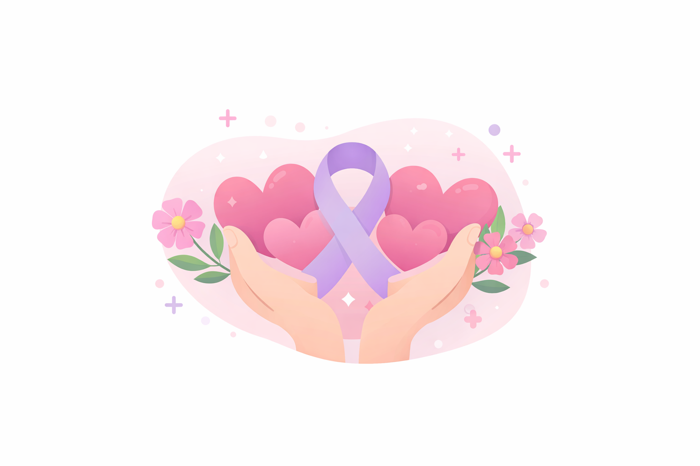
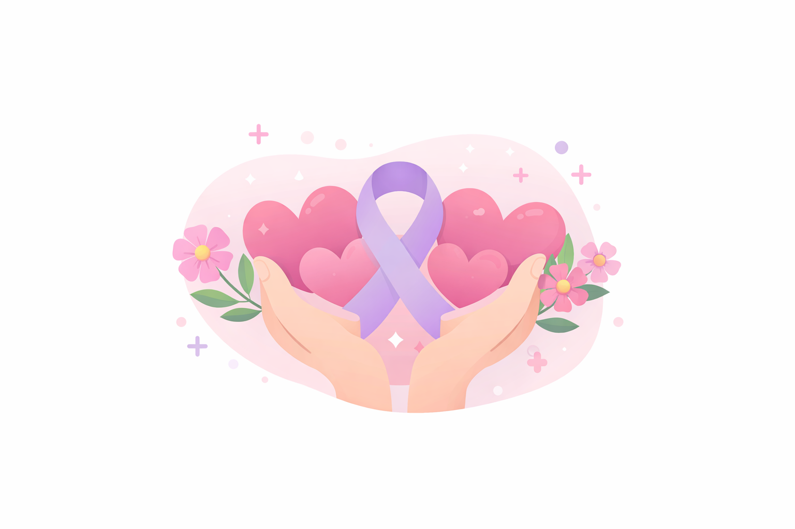
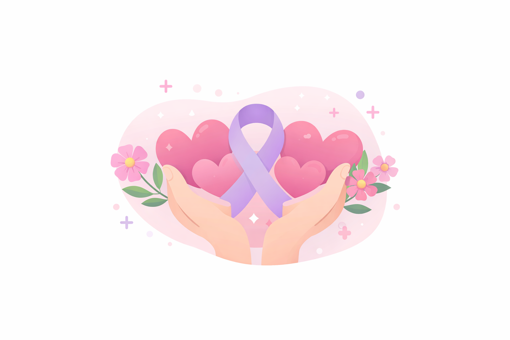

Cuidar+
Conectando quem deseja ajudar com quem precisa de apoio na jornada contra o câncer.
.png)
.png) 

.png)
Conectando quem deseja ajudar com quem precisa de apoio na jornada contra o câncer.

Unidos pela vivência e empatia de quem esteve próximo aos desafios da jornada do câncer.
Ser uma ponte segura e humanizada de cuidado entre quem precisa de apoio e quem deseja ajudar.
Empatia, solidariedade e acolhimento na jornada, fortalecendo a esperança e o cuidado.
O Cuidar+ nasceu de experiências pessoais que marcaram profundamente nossas vidas. Ao vivenciar de perto os desafios de pacientes e familiares na jornada contra o câncer, sentimos a necessidade de transformar essa realidade, criando uma plataforma para unir histórias e formar uma verdadeira corrente de cuidado. Nossa missão é ser essa ponte segura e humanizada entre quem precisa de apoio e quem deseja ajudar.
Entendemos que o apoio vai muito além do material. O Cuidar+ não se limita a ser um canal para doação de medicamentos e suprimentos; buscamos acolher, escutar e fortalecer todos que enfrentam essa dura rotina. Sabemos que a jornada não é vivida apenas pelos pacientes, e por isso estendemos nosso apoio a cuidadores, familiares e amigos, oferecendo um espaço com informação, incentivo e a certeza de que ninguém precisa lutar sozinho.
Nosso compromisso une empatia, transparência e responsabilidade. Acreditamos que a solidariedade transforma vidas e que cuidar é mais do que doar: é compartilhar, estar presente e transformar. Convidamos você a se juntar a nós e fazer parte desta rede de acolhimento e esperança, onde cada gesto de apoio faz a verdadeira diferença.

Se você se identificou com o propósito do Cuidar+ e deseja contribuir, saiba que todo o processo acontece de forma simples e segura pelo nosso aplicativo. Assim, conseguimos organizar cada etapa e garantir que tanto doadores quanto beneficiários tenham uma experiência confiável
Para doadores: Uma das principais formas de colaborar é através da doação de medicamentos e suprimentos. Basta se cadastrar no aplicativo e registrar os itens que deseja doar. Dessa forma, conseguimos conectar quem tem condições de ajudar com quem realmente precisa. Além disso, o Cuidar+ tem como objetivo firmar parcerias com farmácias e redes de saúde para que, no futuro, se tornem pontos de coleta oficiais. Nessas parcerias, os farmacêuticos poderão conferir os medicamentos antes que sejam disponibilizados, trazendo ainda mais segurança e confiança ao processo
Segurança e validação: Para evitar fraudes e garantir que as doações cheguem a quem realmente precisa, o Cuidar+ solicita que os beneficiários enviem receita ou laudo médico no momento do cadastro. Esse documento passa por uma validação do CID, assegurando a autenticidade da solicitação.
Acreditamos que cada gesto de solidariedade transforma vidas. Com a sua ajuda, podemos construir uma rede de apoio cada vez maior, levando alívio a pacientes e cuidadores que enfrentam essa jornada com coragem e esperança.
Adoraríamos ouvir você. Utilize um dos canais abaixo para falar com nossa equipe.